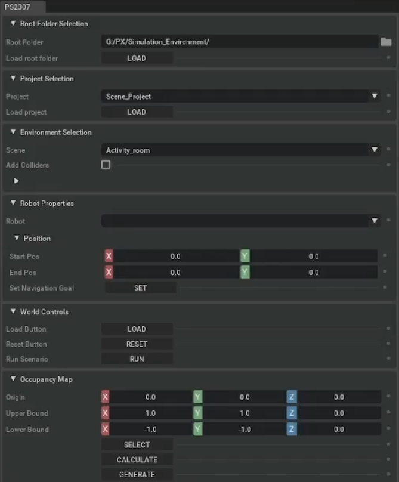
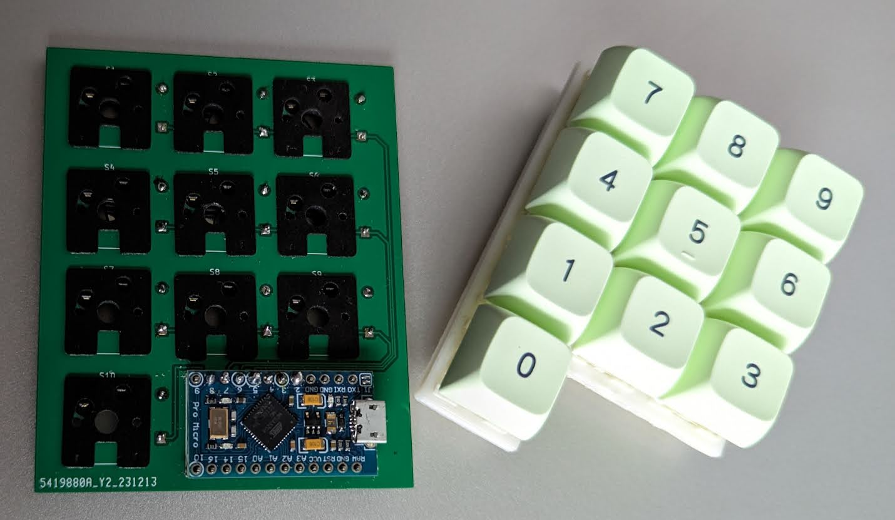

Simulation Environment with NVIDIA Isaac Sim

Undertaken between July and November 2023, this was the "capstone" unit for my Bachelors of Computer Science at Western Sydney University.
As a group of 5, down to 4 by the midway point of the project, we were tasked with communicating with a client to solve a given problem.
The project brief outlined the use of an advanced robotics simulation platform,
NVIDIA Isaac Sim, which would be utilised to visualise how robotics integrate within an aged care facility.
My role within this team was to communicate with the university's IT team in order to be allocated a sufficient AWS virtual machine,
as well as to communicate with the client and subsequently develop an appropriate user interface for the program.
The end result of the project resulted in me achieving a High Distinction for the unit, with the client voicing their appreciation for the work the team had put into learning Isaac Sim, Omniverse, docker, ROS, GitLab, Linux, and Python.
AP-Bot
Running on a Raspberry Pi 3, it is a python script that interacts with instant-messaging platform Discord's API to receive commands from users and perform varying operations such as:
- Download media from a given URL and play it back in a voice channel.
- Remotely turn on and off a computer running various video game servers.
- Log potentially malicious messages from users for further action.
DIY computer numpad

Starting from a PCB created from scratch in KiCad and produced by JLCPCB, it is a basic 10-key numpad.
The diodes and keyboard sockets were hand-soldered to the PCB, along with the Arduino Pro Micro used to power the code interpreting the key presses for the computer.
At time of writing, I am still in the process of designing the case with 3D modelling software Fusion 360, where I will then 3D print it.
Unnamed Web scraping and FTP scripts
A python script that connects to a given IP address either via a hosted webpage or an FTP server and uses regular expressions to obtain the ID of the process running and temperature of the device.
This data is then used to map the ID to an image and name, and finally sent to messaging platform "Discord" to be set as the user's open program.
Programming used:
- Python3.
- regular expressions (regex).
- sqlite3.
- web scraping.
- File Transfer Protocol (FTP).